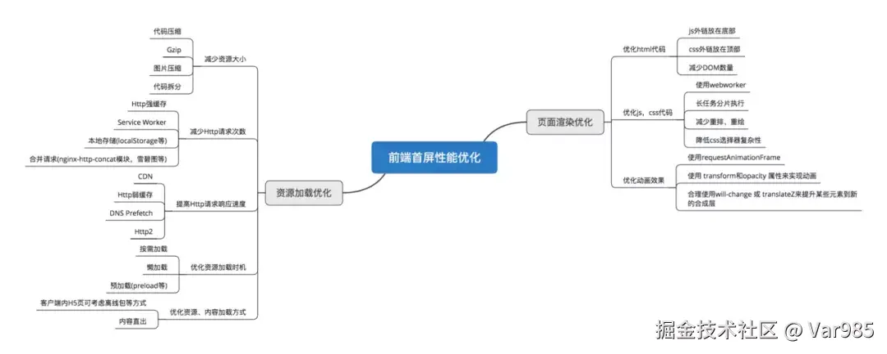

HaoTian · 2024-11-17 11:19:28
这张图是我发现的比较宝藏，比较全面的一张首页加载优化图，便以此图来进行相关总结
通过 Webpack 配置，可以自动压缩 HTML、CSS 和 JavaScript 文件。
// webpack.config.js
const HtmlWebpackPlugin = require("html-webpack-plugin");
const MiniCssExtractPlugin = require("mini-css-extract-plugin");
const TerserPlugin = require("terser-webpack-plugin");
const CssMinimizerPlugin = require("css-minimizer-webpack-plugin");
module.exports = {
mode: "production",
entry: "./src/index.js",
output: {
filename: "bundle.js",
path: __dirname + "/dist",
},
module: {
rules: [
{
test: /\.css$/,
use: [MiniCssExtractPlugin.loader, "css-loader"],
},
],
},
optimization: {
minimize: true,
minimizer: [new TerserPlugin(), new CssMinimizerPlugin()],
},
plugins: [
new HtmlWebpackPlugin({
template: "./src/index.html",
minify: {
collapseWhitespace: true,
removeComments: true,
removeRedundantAttributes: true,
useShortDoctype: true,
},
}),
new MiniCssExtractPlugin({
filename: "styles.css",
}),
],
};
通过 Webpack 配置，可以生成 Gzip 压缩文件。
// 在请求时会带上该请求头，声明它支持的压缩算法
Accept-Encoding: gzip, deflate, br
// webpack.config.js
const CompressionPlugin = require("compression-webpack-plugin");
module.exports = {
// 其他配置...
plugins: [
new CompressionPlugin({
filename: "[path][base].gz",
algorithm: "gzip",
test: /\.(js|css|html|svg)$/,
threshold: 10240,
minRatio: 0.8,
}),
],
};
服务端通过配置协商缓存和强缓存，来实现请求的缓存，这里以强缓存为例
// 设置强缓存
const express = require("express");
const path = require("path");
const app = express();
// 强缓存中间件
app.use((req, res, next) => {
const options = {
maxAge: "1y", // 缓存一年
immutable: true,
};
// 设置 Cache-Control 头
res.set("Cache-Control", `public, max-age=${options.maxAge}, immutable`);
next();
});
// 将静态文件托管到 public 目录
app.use(
express.static(path.join(__dirname, "public"), {
maxAge: "1y", // 缓存一年
})
);
const PORT = process.env.PORT || 3000;
app.listen(PORT, () => {
console.log(`Server is running on port ${PORT}`);
});
通过 Webpack 配置，将静态资源路径指向 CDN。
output: {
filename: '[name].[contenthash].js',
path: __dirname + '/dist',
publicPath: 'https://cdn.example.com/' // 指向你的 CDN 地址
},
启用 HTTP/2 需要在服务器配置中完成，Webpack 本身不直接支持 HTTP/2 配置。
# Nginx 配置
server {
listen 443 ssl http2;
server_name example.com;
# SSL 配置
}
在 HTML 中添加 DNS 预获取。
<link rel="dns-prefetch" href="//example.com" />
通过 Webpack 配置，合并文件和使用图片精灵，同时我们可以将一些小图片转为 base64 格式（虽然会减少请求，但是转为 base64 资源体积会变大一点，所有不推荐进行大图片 base64 处理）
// webpack.config.js
const SpriteLoaderPlugin = require("svg-sprite-loader/plugin");
module.exports = {
// 其他配置...
module: {
rules: [
{
test: /\.svg$/,
use: ["svg-sprite-loader"],
},
],
},
plugins: [new SpriteLoaderPlugin()],
};
使用 Webpack 插件进行预加载和预获取。
// webpack.config.js
const PreloadWebpackPlugin = require("preload-webpack-plugin");
module.exports = {
// 其他配置...
plugins: [
new PreloadWebpackPlugin({
rel: "preload",
as: "script",
include: "allChunks",
}),
],
};
通过 Webpack 配置，使用现代图片格式，如 WebP（但是得注意浏览器兼容性）。
// webpack.config.js
const ImageMinimizerPlugin = require("image-minimizer-webpack-plugin");
module.exports = {
// 其他配置...
module: {
rules: [
{
test: /\.(jpe?g|png|gif|svg)$/i,
type: "asset",
use: [
{
loader: ImageMinimizerPlugin.loader,
options: {
minimizerOptions: {
plugins: [["imagemin-webp", { quality: 75 }]],
},
},
},
],
},
],
},
};
通过 IntersectionObserver API 和自定义指令来实现图片懒加载，路由懒加载即用 vue 的动态路由 @import 引入即可
export default {
inserted(el) {
const loadImage = () => {
const imageElement = el.tagName === "IMG" ? el : el.querySelector("img");
if (imageElement) {
imageElement.src = imageElement.dataset.src;
imageElement.onload = () => el.classList.add("loaded");
}
};
const handleIntersect = (entries, observer) => {
entries.forEach((entry) => {
if (entry.isIntersecting) {
loadImage();
observer.unobserve(el);
}
});
};
const options = {
root: null,
threshold: 0.1,
};
const observer = new IntersectionObserver(handleIntersect, options);
observer.observe(el);
},
};
将 CSS 外链放在页面顶部，因为这样可以确保页面在加载时尽快应用样式，从而避免样式闪烁（FOUC，Flash of Unstyled Content）并提升用户体验。
<!DOCTYPE html>
<html lang="en">
<head>
<meta charset="UTF-8" />
<meta name="viewport" content="width=device-width, initial-scale=1.0" />
<title>Example Page</title>
<!-- 将 CSS 外链放在页面顶部 -->
<link rel="stylesheet" href="styles/main.css" />
<link rel="stylesheet" href="styles/theme.css" />
</head>
</html>
使用 CSS3 动画而不是 JavaScript 动画（原理： transform 等 css3 属于是独立的图层，不会影响其他图层，而且使用 GPU 加速），以减少重排和重绘。
.box {
transition: transform 0.5s, opacity 0.5s;
}
.box:hover {
transform: translateX(100px);
opacity: 0.5;
}
将 JavaScript 文件放在 <body> 标签的底部（现代浏览器支持 async 和 defer 后就不需要了）
<body>
<!-- Content -->
<script src="bundle.js"></script>
</body>
使用 async 或 defer 属性加载外部 JavaScript 文件。
<script src="bundle.js" async></script>
<!-- 或者 -->
<script src="bundle.js" defer></script>
减少不必要的 DOM 操作，合并多次操作为一次。
// Before
element.style.width = "100px";
element.style.height = "100px";
// After
element.style.cssText = "width: 100px; height: 100px;";
使用虚拟 DOM 技术（如 React）减少直接操作 DOM 带来的开销。
// 使用 React 示例
import React, { useState } from "react";
function App() {
const [count, setCount] = useState(0);
return (
<div>
<p>{count}</p>
<button onClick={() => setCount(count + 1)}>Increment</button>
</div>
);
}
在操作 DOM 和样式时，避免可能导致重排的操作，对样式进行统一处理
// Before
element.style.margin = "10px";
element.style.padding = "20px";
element.style.border = "1px solid #000";
// After
element.style.cssText = "margin: 10px; padding: 20px; border: 1px solid #000;";
使用 will-change 属性可以提示浏览器即将发生的变化，使浏览器提前进行优化。
.box {
will-change: transform, opacity;
}
使用服务端渲染技术提前生成 HTML 内容，减少客户端渲染的负担。
// 使用 Next.js 进行 SSR 示例
import React from "react";
import { renderToString } from "react-dom/server";
import App from "./App";
const html = renderToString(<App />);
延迟加载图片和非关键 CSS、JavaScript 文件。
<img src="image.jpg" loading="lazy" alt="Lazy loaded image" />
<script>
var link = document.createElement("link");
link.rel = "stylesheet";
link.href = "non-critical-styles.css";
document.head.appendChild(link);
</script>